1) Qualification Engine
Scores opportunities against ICP, deal size, fit criteria, and likely win path.
Prepared for Ann Highsmith and the Talos leadership team

An AI-assisted pursuit and proposal workflow that helps founder-led teams qualify faster, respond faster, and reduce manual BD/admin load.
Ann Highsmith, Talos (Intro/Pilot Discussion)
Scores opportunities against ICP, deal size, fit criteria, and likely win path.
Flags low-probability pursuits early so effort stays on winnable work.
Transforms source data into first-pass response packages and checklists.
Supports different market profiles by geography, vertical, and account type.
Builds concise prep notes before calls so outreach becomes more relevant.
Packages key facts, assumptions, and actions so teams can execute with less rework.
Target outcome: move from multi-week admin-heavy cycles to faster, repeatable qualification and first-draft output with tighter focus on high-value accounts.
Commercial structure and service levels.
$5,500 one-time (2 weeks)
Focused 2-week pilot for Talos, applied to 1 live pursuit cycle with executive digest, qualification output, and implementation recommendation.
$6,000 per month | 3-month minimum
Monthly operating cadence, qualification/go-no-go support, draft acceleration, and weekly leadership checkpoint (up to 2 pursuit cycles per month).
$9,500 per month | 3-month minimum
Embedded Capture Partner
Includes up to 4 pursuit cycles per month, structured pursuit planning support, dedicated searchable Q&A workspace, twice-weekly stakeholder standups, and executive performance snapshots.
This page is designed for referral conversations: where the system fits, who to introduce, and what outputs are produced.
Prioritize larger portfolios, site complexity, and measurable labor/productivity gains.
Screen for high-square-foot environments where scale economics and uptime constraints matter.
Support requirement parsing, compliance checks, and submission readiness for longer bid packages.
Map high-traffic operational contexts and multi-stakeholder evaluation criteria.
Qualify accounts where consistency, reporting discipline, and process clarity are essential.
Create rapid target-account triage and practical go-to-market execution packages.
Boss Key helps lean teams execute business development faster by combining qualification discipline, proposal acceleration, and operational handoff structure into one practical system.